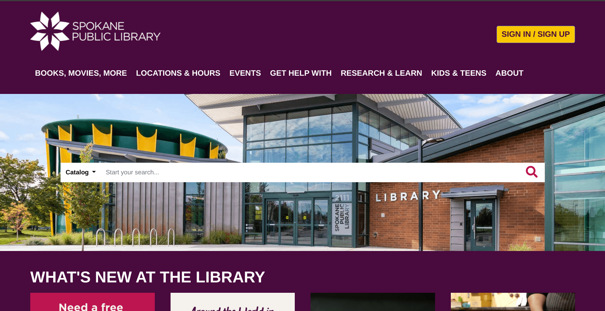

Hey World!
When you meet a coder, you're meeting someone whose core daily
experience is of unending failure and grinding frustration.
I'm Corey Scanlan, a software engineer continuously learning and growing by persevering through failure in the craft of web application development. I strive for a rewarding career of collaborative work helping others while maintaining a healthy work-life balance.
My programming interests include:
- Accessibility
- Application architecture
- Open source projects, of which I hope to someday contribute
- Progressive enhancement
- Readable, maintainable, performant code
- Reusable custom elements
- Testing, as it seems so important to reliable and maintainable applications
- Valid and semantic HTML
- The Web is the platform
Some of the technologies I've used along my way:
-
 HTML5
HTML5
-
 CSS 3
CSS 3
-
 JavaScript
JavaScript
-
 Python
Python
-

-
 Vue.js
Vue.js
-

-
 Debian
Debian
-
 C
C
-
 Elventy
Elventy
-
 Flask
Flask
-

-
 Linux
Linux
-

-
 npm
npm
-

-
 SSH
SSH
-

-
 Vim
Vim
-
 VS Code
VS Code
Some of the technologies I want to learn:
- Nuxt
- I want to learn Nuxt because I want to get stronger in Vue.js and to stay aware of the latest web development techniques and approaches, and because I like the options of building applications with reusable Vue components and using one tool to generate static sites, server side rendered sites, or a hybrid combination of the two approaches.
- Rails
- I like that Ruby on Rails is opinionated and follows conventions, is beloved by many developers, is a great framework for start-ups, and is used by many major websites.
- Rust
- I'm interested in Rust for its C-like performance and safer memory management, because it may be integrated into the Linux kernel, its ability to compile into WebAssembly, its appreciation as a "most loved programming language", and its support from Mozilla Research.
- Svelte
- I respect that Svelte appears simple to write, compiles to vanilla JavaScript, and ships with only the code an application needs.
- Vite
- Vite was made by the creator of Vuejs, so I'm eager to give it a shot as an opinionated, faster, and leaner build tool.
- Web Components
- Web Components are exciting as reusable components that are vendor and framework independent, based on official web standards, and supported by all major browsers.
Some of my projects (In Development):
-
Business mock-up for Neato Burrito and the Baby Bar

-
Clone of the Spokane Public Library website
-
Magic The Gathering: Rock Lobster, Paper Tiger, Scissors Lizard game

Some project ideas that I hope to build:
- A full client side SSG with a WYSIWYG editor that can save itself to GitHub/Lab and/or ftp and deploy to simple hosting services
- Maybe a blog for one of my brothers, he seems to have a lot to say to the world
- A game based on Magic The Gathering basic lands; 2 players on seperate machines
- Rebuild a friends business site with modern tools
- A personal blog - Today I learned, explained like I'm five (TLI_ELI5); hopefully clear, short, and simple explanations of new topics I'm learning; mostly programming focused
Contact Me
I have to be honest that I've never really taken to social media. Myspace didn't have much appeal to me when it was new and nothing since has really grown on me either. However, I have held on to a few of these accounts to stay abreast of the news, my hobbies, and local events, or because I needed one account or another for various jobs over the years. The best way to reach me is to send me an email, and I'll do my best to respond promptly.